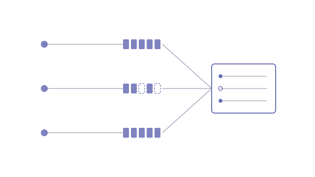

Once a business starts building agents, it quickly has a dozen of them, spread across workflow platforms, serverless apps, container services and video AI, each built fast by whoever needed it. Nobody can answer the basic operational questions: what agents exist, what state each one is in, what changed this month, which have quietly gone stale, who owns them, and whether they meet the governance bar. Answering meant opening every repository and reconstructing the picture by hand.
- A renderer over data that already exists: every agent's repository carries its own status file, and the monitor scans every repository in the organisation on an hourly schedule, reading a handful of named docs plus git metadata and never the source code
- Structured frontmatter is read first, with a prose parser as fallback. Repositories with no docs at all still appear, badged as unscaffolded, rather than silently missing
- Drift detection: where docs and git disagree, the card says so, and a daily scan turns that into a list of agents whose status needs updating
- A date-ranged update builder produces "what changed since" across every agent, either as deterministic entries or as an LLM draft that may rewrite but never add
- An ISO/IEC 42001 register view lists each system's risk, models, data, personal data, oversight, runtime and owner, naming every undeclared field as a gap
One live view over the whole agent portfolio, behind single sign-on and refreshed hourly. A portfolio update that used to take an hour of repo-hopping is now a five-minute read and copy. Every agent repository carries a complete register entry, and new projects are born with one because the register questions are asked in the planning interview.
- Next.js on Vercel · hourly cron
- Supabase · snapshot cache, Google SSO
- GitHub REST API · read-only token
- Anthropic API · update drafts only
The disagreement is the signal
The obvious way to monitor a set of agents is to read git: last commit, commit rate, open pull requests. Here git turned out to lie about the thing that mattered most. Several projects were put under version control weeks after the work began, so their first commit claimed a project was days old when its own status file recorded a month of delivery. A monitor that trusted git alone would have reported the most mature agents as the newest.
So each source answers only what it is good at. Project age, milestones and status come from the docs; activity and velocity come from git. Where they contradict, for instance code changed last week but the status file hasn't been touched in a month, the card names both dates rather than picking one. That contradiction is exactly the maintenance work nobody notices, and a daily scan reports it as a short list: these agents have shipped changes their documentation doesn't describe yet. Keeping a portfolio maintained turns out to be mostly about making drift visible early.
Observe, never own
The monitor is deliberately not a system of record. It never writes to a repository, and nothing about an agent's state is typed into it. Status lives in each project's own status file, next to the code it describes, and changes in the same commit. If the monitor disappeared tomorrow, every agent would still carry its complete state. That one rule removes the usual failure of portfolio tools, which is becoming a second source of truth that drifts from the first.
The governance layer follows the same principle. The ISO/IEC 42001 register shows only declared facts: risk class and owner are human judgements and are never inferred, an explicit "none" counts as recorded, and a missing field shows as a named gap on that system. Where the monitor can derive something useful, such as when an agent went live or which teams it affects, it proposes the value as unconfirmed and hands back a block to paste into the repository. A human commits it. Time saved is never entered at all; it is computed from a baseline and real run counts, so any figure shown to leadership has its working visible behind it.